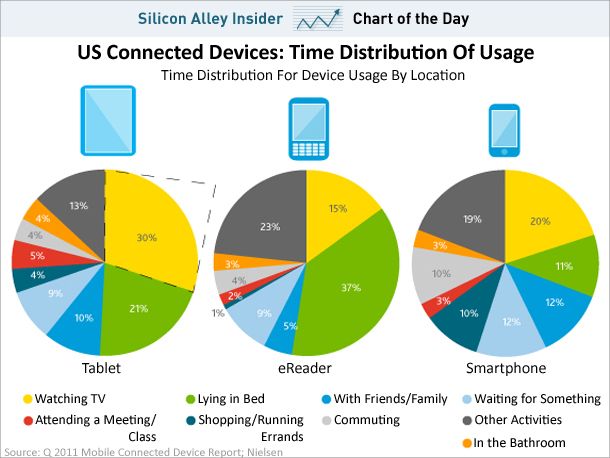

A Crash Course in Responsive Design
with Angelina Fabbro & Jacky Gilbertson
WELCOME
(image credit: pusheen.com)
Mobile Matters

Mobile Matters
(photo credit: International Institute for Communication and Development (IICD))
How do we make mobile websites?
- Design separate sites for mobile and desktop (sometimes a tablet version too)
- Mobify it (3rd party - http://www.mobify.com/mobifyjs/)
- Responsive design
Pros of designing separate sites
- Best performance
- Highest level of detail control
Cons of designing separate sites
- Multiple websites to maintain
- Poor redirection/no redirection for link sharing
Pros of Mobify (3rd party)
- Can use it on any existing desktop site, with existing security
- Serves up the page to mobile users at the same URL
- Separate templates mean conditonal content loading
- Transform DOM elements into other DOM elements
Cons of Mobify (3rd party)
- AJAX (content loaded asynchronously by JS) - based sites end up being slower
- Relies on 3rd party Javascript
- Learning curve - need to be familiar with Javascript, command line tools etc.
Pros of Responsive Design
- You only make one website!
- Not just about the device - resize the browser and it still looks good!
Cons of Responsive Design
- Development time
- Worse performance
Design Tools
Development Tools
- HTML5 (check http://caniuse.com/)
- CSS 3 (check http://caniuse.com/)
- Javascript (Crockford's Javascript: The Good Parts)
Designing for Mobile
- You will get the best results if you design for mobile first
- Don't design to a fixed grid and then try to make it fluid later. Fluid grids/layout all the way!
- Assume that you're designing for touch screens (iOS HIG suggests 44px^2 as tap target)
- Large headings work better on wider layouts
Designing for Mobile
- Navigation is less important than you think sometimes
- Get rid of superfluous content
- Don't be afraid of whitespace
- If you're a business: make it easy to find you
Bad Examples
Steam Clock's website :(
Good Examples
createdm.com
choiceresponse.com
Performance
- You NEED to care about performance
- Performance is actually about perception rather than stats - users first!
- Minify CSS and JS
- CSS in the head, JS in the footer (there are exceptions, like Mobify/Modernizer)
- Keep components under 25k
For more check out: http://developer.yahoo.com/performance/rules.html/
BREAK - THEN CODING!
Angelina Fabbro / @angelinamagnum / angelina@steamclocksw.com
Jacky Gilbertson / @jackygilbertson / jackymakesthings@gmail.com